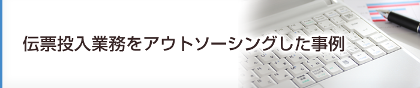
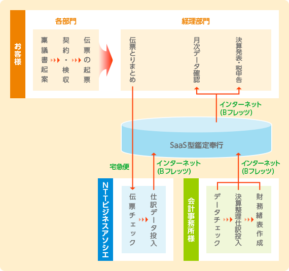

SaaS型経理システムで手軽に伝票投入アウトソーシングを実現！
企業規模によっては、大規模なERPやワークフローの導入が必ずしも適切な効率化ソリューションとはならない場合があります。SaaS型の経理システムと業務アウトソーシングのコンビネーションにより、効率化とコア業務への人員シフトを達成された事例です。
お客さま情報
サービス業D社様 売上高10億円 従業員数50名
委託業務内容
経理・財務関連
（支払伝票、社員経費伝票の投入作業）


当初の課題認識
お客さまでは部長1名、一般社員2名で経理業務を実施していた。購買代金や社員経費の支払については、各部署にて作成した手書の伝票を経理担当にてExcelに手投入し、仕訳データを作成するとともに、振込データとしても活用していた。
お客さまは小規模な会社であることから、ワークフローやERPを導入すると却ってシステムコストが割高となるため、経理担当が集中して入力する処理方法が費用対効果から適切なものであるとの認識だった。ただし、業務が煩雑で経理担当者の稼働が大きかったことから、その業務をアウトソーシングすることによって負担を軽減し、別の業務に集中させたいと考えていた。
また、お客さまは財務諸表については、簡易な会計ソフトを使って作成していたが、経営管理帳票を出力する機能がないため、経営者に対し部門別収支やプロジェクト別収支といった経営判断に必要なデータを十分に提供できない状況だった。業務のアウトソーシングとともに様々な経営管理帳票出力に対応した経理システムを導入し、経営管理面を充実させたいという希望もあった。
業者選定のポイント
お客さまは業務のアウトソーシングと経理システムの導入を、ワンストップで提案してくれることを希望されていた。また、今回のアウトソーシング対象業務は伝票投入のみだが、将来的には月次決算に伴う数値チェックや財務諸表作成も合わせた委託形態を想定していたことから、そのような高スキルを要する業務にも対応できる実力を持った業者を選定したいと考えていた。
NTTビジネスアソシエを選んだ決め手
伝票投入業務に加え、経理システムの提案があったのがポイントとなった。具体的には、SaaS型勘定奉行の導入提案だったが、当面は仕訳や残高のチェックを会計事務所に引き続き委託する予定であることから、お客さま企業、会計事務所、NTTビジネスアソシエの3ヵ所から一つの経理データに同時にアクセスできるSaaS型の経理システムは、目指すアウトソーシングの形態にマッチしていた。そして、インターネットに接続できる環境があれば、自社で経理システム用のサーバやネットワークを準備せずに利用できる手軽さも大きな魅力となった。
また、収支管理方法について、部門やプロジェクトのコード体系をどのようなものにしていくべきか、といった改善提案も行っている。更に、NTTビジネスアソシエはNTTグループのシェアードサービスセンターであり経理業務全般に関する経験も豊富であることから、将来のアウトソーシング範囲の拡大に際しても問題なく対応できるという安心感があったことも大きな判断材料となった。
その他
会社規模がそれほど大きくないため、社内のIT環境を統括するような情報システム部門が存在せず、各部署がそれぞれの責任において、デスクトップパソコンに業務のデータを蓄積していた。今回は複数拠点からの同一データへのアクセスを可能とする手段としてSaaS型経理システムの導入に踏み切ったが、社外に安全にデータを保管できることから、災害の発生時におけるデータの安全性確保の面からも効果があった。
コンサルティングの概要
